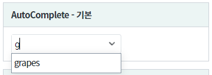
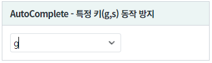
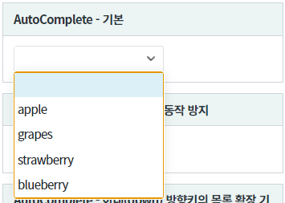
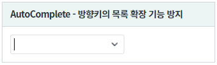
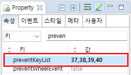
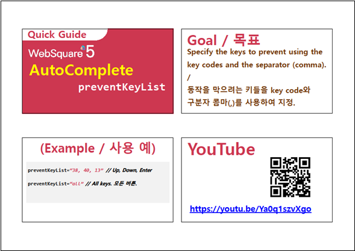

검색어 입력창에서 특정 키의 동작(목록 검색, 목록 확장 등)을 방지하는 예제입니다. 컴포넌트의 속성 "preventKeyList"를 사용합니다.
검색어 입력창에서 "g" 또는 "s"를 입력시 목록 검색 방지하기
검색어 입력창에서 방향키(아래)를 눌렀을 때 목록 확장 방지하기
설정이 되지 않은 기본 컴포넌트와 "특정 키 동작 방지"가 설정된 컴포넌트로 구성되어있습니다. 각각의 컴포넌트에 키를 입력하여 목록이 출력된 결과를 비교합니다.
그림 1.브라우저(Chrome) 실행 예시 - 기본 설정의 g키 입력

그림 2.브라우저(Chrome) 실행 예시 - "특정 키(g,s) 동작 방지"의 g키 입력

그림 3.브라우저(Chrome) 실행 예시 - 기본 설정의 아래(down) 방향키 입력

그림 4.브라우저(Chrome) 실행 예시 - "방향키의 목록 확장 기능 방지"의 아래(down) 방향키 입력

컴포넌트의 속성 preventKeyList에 "37,38,39,40"를 입력합니다. (37=left,38=up,39=right,40=down)
그림 5.웹스퀘어5 SP5 스튜디오의 Property View(속성창) 예시

<!-- autoComplete의 소스 본문 예시 --> <w2:autoComplete preventKeyList="37,38,39,40"> <!-- 중략 --> </w2:autoComplete>
컴포넌트의 속성 preventKeyList에 "13"를 입력합니다. (13=enter)
<!-- autoComplete의 소스 본문 예시 --> <w2:autoComplete preventKeyList="13"> <!-- 중략 --> </w2:autoComplete>
preventKeyList
[웹스퀘어5 SP5 개발 가이드] AutoComplete
링크 : https://docs1.inswave.com/sp5_user_guide/8df43d1f59fab704#78fdcfd6e7d33101
[웹스퀘어5 SP5 개발 가이드] AutoComplete 특정 키 동작 방지
링크 : https://docs1.inswave.com/sp5_user_guide/8df43d1f59fab704#774965ded55d8db5
AutoComplete 특정 키 동작 방지
링크 : https://youtu.be/Ya0q1szvXgo
